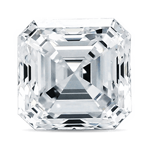
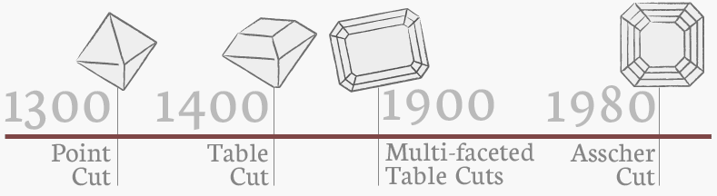

Sapphire:
The Asscher cut is a unique shape with prismatic brilliance and a rectangular-faceted pavilion in the same style as the emerald cut. The standard number of main facets on an Asscher cut is usually 58 and the typical ratio for the more popular square-shaped Asscher cuts is 1.00 to 1.05. The width of the cut corners may vary. With its deep pavilion, faceted culet, high crown and small table, the Asscher cut allows for tremendous lustre and creates a fascinating optical illusion known as the “Hall of Mirrors” effect. The Asscher cut is referred to as a Square Emerald cut on a laboratory certificate, such as GIA or AGS. Although confusion reigns about what the differences are between an Asscher cut and a Square Emerald cut, they are in fact the same thing. However, there also exists a much rarer Royal Asscher cut, which is a patented version of the original Asscher cut with wide cut corners and 74 facets (instead of 58), and is classified as an octagonal step cut by the GIA.
Named after its creator Joseph Asscher, owner of the Amsterdam-based diamond company of the same name, the Asscher cut was developed in the early 20th century at the birth of the stylish and popular Art Deco movement. Joseph Asscher rose to fame several years later when he was commissioned by King Edward VII to cut the famous 3,106-carat Cullinan diamond for the English crown jewels. In 1980 Her Majesty Queen Juliana of Holland granted the Asscher Diamond Company a royal title in recognition of the role the Asscher family and company had held in the diamond industry. This cut’s popularity peaked in the late 1920s but remained a somewhat rare commodity for the remainder of the century, available only in antique shops and specialised Art Deco jewellers. At the onset of the new millennium, following considerable research and development, the Asscher cut was redesigned with new specifications and additional facets for a more brilliant shine, and has since regained its popularity.
